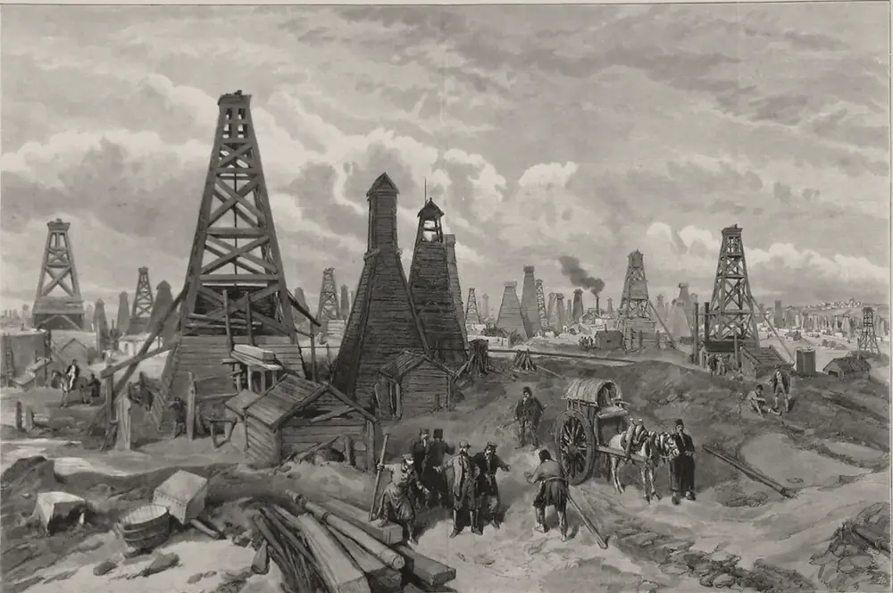

· Edición 25 · 6 min de lectura
Subsidio al diésel: todos pagamos el tanqueo de las camionetas, y Colombia y Malasia ya saben cómo dejar de hacerlo

Grabado según un dibujo de William Simpson, 1886 · Dominio público, vía Wikimedia Commons
Subsidio al diésel: todos pagamos el tanqueo de las camionetas, y Colombia y Malasia ya saben cómo dejar de hacerlo
En pocas palabras. En Colombia el diésel vive en liquidación permanente, como esas tiendas que llevan años «cerrando por remate»: se vende miles de pesos por debajo de lo que cuesta afuera, y la diferencia la pagamos todos con el presupuesto. La guerra entre Estados Unidos e Irán, con el barril cerca de 100 dólares, agranda el descuento: por ahí nos llega esa guerra. El Gobierno estudia cobrarles el precio real a camionetas, carros oficiales y diplomáticos. La buena noticia: Colombia ya cerró este mismo hueco con la gasolina, y Malasia lo cerró con el diésel. La receta es subir de a poco, explicar y compensar a quien más lo siente.
Cómo se conecta. El 29 de septiembre contamos que el Gobierno gasta 40 y recibe 29, y que volvió a tocar la puerta del FMI (edición 10). Este subsidio es una de las goteras de ese techo: unos 9,7 billones de pesos al año que salen del mismo presupuesto. Y es pariente de la edición 24 de hoy, la del riesgo de apagón: en las dos, la energía sube y alguien tiene que decidir quién paga.
Qué pasó. Imagine una tienda que vende el arroz más barato de lo que lo compra y cubre la pérdida con un préstamo. Cuando el arroz sube, la deuda crece cada semana. Así funciona el Fondo de Estabilización de Precios de los Combustibles, el FEPC. En octubre, el ACPM se vende en promedio a 11.320 pesos el galón en las 13 ciudades principales. Cuánto por debajo del precio internacional depende de quién haga la cuenta: el gremio de las estaciones de servicio dice unos 5.100 pesos por galón; Anif, el centro de estudios de los bancos, unos 8.400.
El 6 de octubre se supo que el Gobierno estudia cobrar el precio internacional a los carros particulares, oficiales y diplomáticos que usan diésel; camiones y buses seguirían con subsidio. Ahorro calculado: unos 698.000 millones de pesos al año. Es un buen comienzo, pero apenas unos 7 de cada 100 pesos del subsidio.
Cómo llegamos aquí.
- El surtidor no pregunta. A la bomba le da lo mismo si llega un bus intermunicipal o una camioneta blindada: el descuento es igual para todos. (Conocimiento general.)
- Los seis meses más largos del mundo. En diciembre de 2025, el gobierno anterior expidió el Decreto 1428 para cobrarles el precio real a esos carros y dio seis meses para reglamentarlo. Han pasado más de nueve. Eran, al parecer, seis meses de los de «ya casi llego».
- Subir de un golpe sale caro. El 31 de agosto de 2024, el galón subió 1.904 pesos de una vez. Hubo cuatro días de bloqueos y el alza terminó en 800, en dos partes.
Ya nos pasó, y lo resolvimos. Con la gasolina teníamos el mismo hueco. En 2022 el déficit del FEPC llegó a unos 36 billones de pesos, según el Comité Autónomo de la Regla Fiscal. Desde finales de ese año, el precio subió un poco cada mes, con pausas cuando apretaba, hasta que en enero de 2024 el galón llegó a unos 15.164 pesos y el Ministerio de Hacienda dio la brecha por cerrada. No hubo paro nacional por la gasolina. Al diésel nunca le llegó su turno.
Y en otras partes.
- Malasia: descuento solo para quien mueve la economía. El 10 de junio de 2024 dejó flotar el precio del diésel en la península: el litro pasó de 2,15 a 3,35 ringgit. Pero los camiones de carga conservaron el precio viejo con una tarjeta de flota con tope de litros; el transporte público y los pescadores, sus precios especiales; y los dueños de carros diésel, campesinos y pequeños productores recibieron 200 ringgit al mes en efectivo. Su Ministerio de Finanzas dice que ahorra unos 5.000 millones de ringgit al año, más de 1.000 millones de dólares, y que el contrabando de diésel bajó. Es la cifra del propio Gobierno; no encontramos una evaluación independiente.
- Indonesia: cambiar subsidio por carreteras. En enero de 2015 quitó el subsidio a la gasolina y dejó uno fijo y pequeño para el diésel. Liberó unos 15.600 millones de dólares y duplicó la inversión en carreteras, puertos y trenes. Le ayudó la suerte: el petróleo venía cayendo. El Banco Mundial advirtió que gastar esa plata a tiempo costó más de lo previsto.
- La receta, según el FMI. Una revisión de 28 reformas en el mundo, publicada en 2013, encontró que las que duran suben el precio de a poco, explican cuánto cuesta el subsidio y compensan con dinero directo a quien más lo siente. Otra revisión, de 2012, halló que el 20% más rico recibe unas seis veces más subsidio que el 20% más pobre.
Pero ojo.
- El diésel mueve la comida. Más de la mitad del golpe de quitar un subsidio llega por otros precios, según esa revisión de 2012. Con la inflación en 6,29% en septiembre, según el DANE, se siente en la plaza.
- Ecuador lo intentó y el petróleo lo devolvió. En septiembre de 2025 quitó el subsidio al diésel y compensó a los transportadores. Hubo paro y estado de excepción. En 2026, el petróleo caro por la guerra con Irán lo obligó a volver a subsidiar.
- Malasia e Indonesia no son Colombia. Tienen otro tamaño, otro Estado y otra historia de protestas. La lección que viaja es la receta, no el calendario.
Dos lecturas
Empezar por quien más tiene. Cobrarles el precio real a camionetas y carros oficiales es justo y protege a camiones y buses, que mueven la comida y a la gente. Es un primer paso que el país puede aceptar, y muestra que el ajuste empieza por arriba.
No es momento de subir. Con la inflación en 6,29%, cualquier alza del diésel termina en los precios. El problema no lo creó quien tanquea, sino el petróleo caro por una guerra lejana. Mejor esperar a que baje el barril.
Quién decide y cuándo
Quién decide. El Ministerio de Minas y Energía fija el precio y prepara la resolución para el diésel de particulares; el Ministerio de Hacienda maneja el FEPC. La Superintendencia de Industria y Comercio ya revisó el proyecto.
Cuándo. No hay fecha. Los precios de los combustibles se revisan cada mes.
Cómo participar. Los ministerios publican sus proyectos de resolución para comentarios antes de expedirlos. (Conocimiento general.)
Seguimiento de la decisión
Pendiente · sin fecha fija
Ministerio de Minas y Energía y Ministerio de Hacienda: Expedir la resolución que fija el precio internacional del ACPM para vehículos particulares, oficiales y diplomáticos, y decidir si el precio del diésel para todos vuelve a subir.
El Decreto 1428 de 2025 dio seis meses para reglamentarlo y el plazo venció a mediados de 2026. El 6 de octubre se supo que el Gobierno estudia aplicarlo; no encontramos fecha.
La paradoja del día
Con la gasolina, el país ya probó que subir de a poco funciona y que nadie se muere de un alza mensual pequeña. Con el diésel llevamos años esperando el momento perfecto para empezar. El momento perfecto, por ahora, sigue sin llegar.
Para conversar
La pregunta. Si el diésel barato lo pagamos todos con impuestos, ¿quién debería pagar más cuando suba: el que tiene camioneta, el camionero o el que compra la comida?
Qué podríamos hacer. Copiar lo que ya funcionó: un calendario de alzas pequeñas y conocido de antemano, como el de la gasolina; precio especial solo para carga y transporte público, con tope, como en Malasia; y ayuda en efectivo para quien de verdad lo necesita.
Para leer más
El Estado mágico: naturaleza, dinero y modernidad en Venezuela, de Fernando Coronil (Nueva Sociedad, 2002; reeditado por Alfa en 2013). Un estudio clásico sobre cómo la renta del petróleo moldeó al Estado venezolano en el siglo XX. Sirve para pensar por qué el precio del combustible pesa tanto en la política de un país petrolero.
¿Le interesa ver las fuentes?
23 fuentes: 1 académica, 5 oficiales, 2 de organizaciones, 15 de prensa.
- Prensa Infobae. Gobierno de De la Espriella estudia acabar con el subsidio al Acpm para conductores particulares y vehículos diplomáticos y oficiales: cómo lo haría
- Prensa Valora Analitik. Gobierno da pasos en eliminar subsidio al diésel para camionetas, carros oficiales y diplomáticos
- Oficial Superintendencia de Industria y Comercio. Abogacía de la competencia: proyecto de resolución del Ministerio de Minas sobre el precio del ACPM para vehículos particulares, diplomáticos y oficiales
- Oficial Ministerio de Hacienda (vía Cerlatam). Decreto 1428 de 2025: mecanismo diferencial de estabilización de precios del ACPM
- Prensa Vanguardia. Precio del ACPM aumenta 200: ¿qué pasó con la tarifa diferencial para particulares?
- Prensa Infobae. Gasolina sube 46 pesos desde el 1 de octubre y ACPM mantiene su precio: así quedan los combustibles en Colombia
- Prensa El Espectador. ¿Por qué el ACPM es más barato en Colombia? 8.400 pesos por debajo del precio internacional
- Prensa Portafolio. El precio de no subir el ACPM: el subsidio podría costarle al Estado 9,7 billones en un año
- Prensa Portafolio. Petróleo por encima de los 100 dólares no sería suficiente para aliviar las cuentas de Colombia: el FEPC absorbería buena parte
- Prensa Fortune. Current price of oil as of October 6, 2026
- Oficial Comité Autónomo de la Regla Fiscal (CARF). Análisis sobre el Fondo de Estabilización de Precios de los Combustibles (documento técnico)
- Prensa Vanguardia. Aumento del precio de gasolina en Colombia permitirá reducir el déficit del FEPC de 36 billones a 26 billones: Carf
- Prensa Noticias Caracol. Galón de ACPM tendrá primer aumento de 400 pesos a partir de este sábado, según MinHacienda
- Prensa Vanguardia. Se levanta el paro camionero: Gobierno y transportadores llegaron a un acuerdo
- Académica World Development (Arze del Granado, Coady y Gillingham, 2012). The Unequal Benefits of Fuel Subsidies: A Review of Evidence for Developing Countries
- Organización Fondo Monetario Internacional (Clements y otros, 2013). Energy Subsidy Reform: Lessons and Implications
- Prensa El Diario (Ecuador). El Gobierno de Ecuador eliminó este sábado 13 de septiembre el subsidio al diésel
- Prensa Expreso (Ecuador). Combustibles caros complican el ahorro de Ecuador en subsidios
- Prensa El País (Cali). La inflación anual en Colombia mantiene la tendencia al alza; según el Dane, los precios variaron 6,29 % a septiembre
- Oficial Ministerio de Finanzas de Malasia. Government implements targeted diesel subsidy for Peninsular Malaysia effective 10 June 2024
- Oficial Ministerio de Finanzas de Malasia (vía prensa). Govt saves RM5 bln through diesel subsidy rationalisation
- Organización Global Subsidies Initiative (IISD). Financing development with fossil fuel subsidies: Indonesia
- Prensa Portafolio. Precio de la gasolina enero 2024: Gobierno anuncia incremento de 600
Glosario
- ACPM: aceite combustible para motor; el diésel que usan camiones, buses y algunos carros.
- FEPC: Fondo de Estabilización de Precios de los Combustibles. Cubre la diferencia entre el precio internacional y el que se cobra en Colombia; cuando esa diferencia crece, la paga el presupuesto.
- Precio de paridad internacional: lo que costaría el combustible si se vendiera al precio del mercado mundial.
- Brent: tipo de petróleo que sirve de referencia para el precio mundial.
- Anif: centro de estudios económicos financiado por el sector financiero.
- Abogacía de la competencia: revisión que hace la Superintendencia de Industria y Comercio de una norma antes de que salga, para ver si afecta la competencia.
Nota metodológica
Esta edición se reescribió el mismo 8 de octubre, a pedido de los editores, para probar un tono con algo más de humor, contar primero cómo se ha resuelto el problema aquí y en otros países, y explicar cómo se conecta con otros temas. Las cifras no cambiaron. Se sumaron Malasia, Indonesia y la experiencia colombiana con la gasolina, con sus fuentes; lo de Malasia e Indonesia lo conocemos por los comunicados oficiales y resúmenes, no por evaluaciones independientes completas.
Esta es la segunda edición del día. El puntaje y los descartes del día están en la edición 24. Este tema sumó 17 de 21: alcance 3, gravedad 2, duración 2, cercanía 3 y decisión 2. Pasa las cuatro condiciones de nudo: persiste (el hueco existe desde hace años y el alza del diésel se ha frenado al menos dos veces), tiene un mecanismo (un precio igual para todos, que se fija por debajo del internacional y cuya diferencia paga el presupuesto), alguien lo puede cambiar (ministerios de Minas y de Hacienda) y el daño es medible (billones de pesos al año que salen del presupuesto).
La guerra entre Estados Unidos e Irán también sumó 17 como tema del mundo. Su canal hacia Colombia es el mismo de esta edición, el precio del combustible, y a igual puntaje preferimos el tema colombiano. Por eso la contamos aquí, en «En pocas palabras», y no en una edición aparte.
Hicimos unas 20 búsquedas en español e inglés para este tema. No pudimos abrir ningún documento completo; trabajamos con resúmenes y resultados de búsqueda. De 19 fuentes, 5 no son de prensa: para este tema casi todas las cifras recientes solo las encontramos en la prensa.
Quedó sin verificar o con límites:
- La brecha por galón cambia según quién la calcule (5.100, 7.500 u 8.400 pesos) y según el precio del petróleo y del dólar.
- Los 9,7 billones al año son un cálculo del gremio de las estaciones de servicio; los 698.000 millones, del Gobierno. La cuenta de «7 de cada 100» es nuestra y mezcla las dos fuentes: es un orden de magnitud.
- No encontramos el texto del proyecto de resolución ni el concepto de la Superintendencia; solo su registro.
- El cálculo de Anif lo conocemos por la prensa.
- Que la gasolina se corrigió subiendo mes a mes es conocimiento general; no encontramos la cifra oficial de cierre de esa brecha.
- La revisión del FMI de 2013 la conocemos por resúmenes y presentaciones de sus autores. El FMI es parte interesada: lleva años recomendando quitar estos subsidios.
- Lo de Ecuador viene de la prensa ecuatoriana.
El grabado muestra los pozos de petróleo de Bakú, a orillas del mar Caspio, según un apunte del dibujante escocés William Simpson de 1886. Lo usamos para evocar el petróleo, de cuyo precio depende el subsidio; es de otra época y no muestra nada de hoy. Le recortamos los márgenes y el título.
El libro no está en Santo & Seña. Lo elegimos por el tema y confirmamos autor, años y editoriales en reseñas de la revista Nueva Sociedad y en fichas bibliográficas.